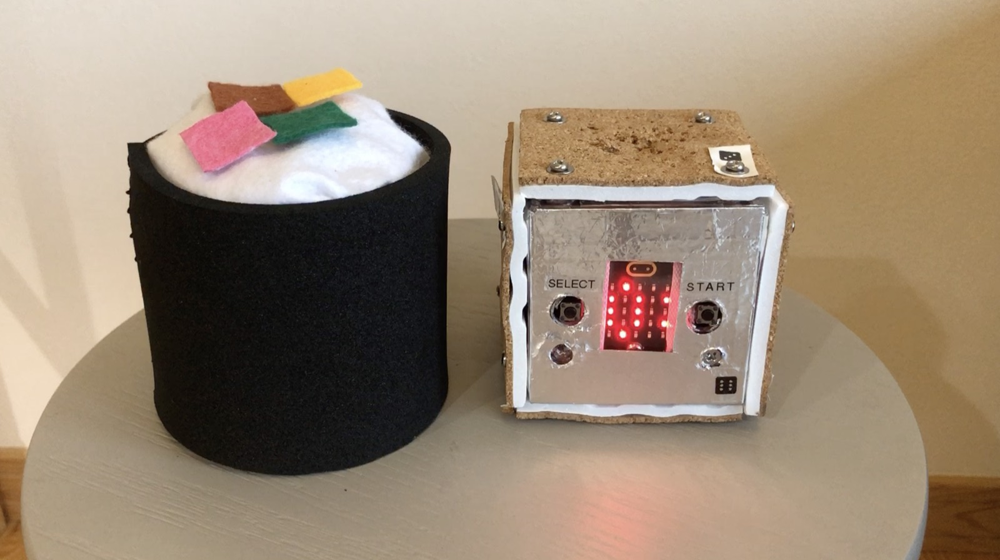
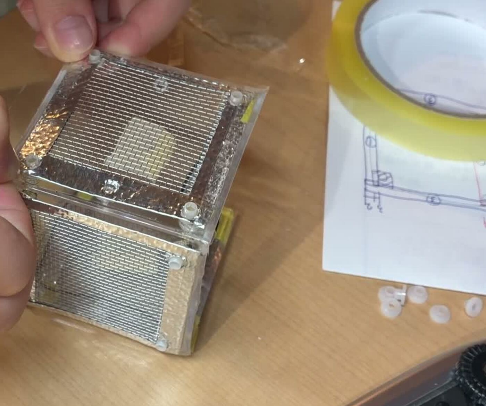
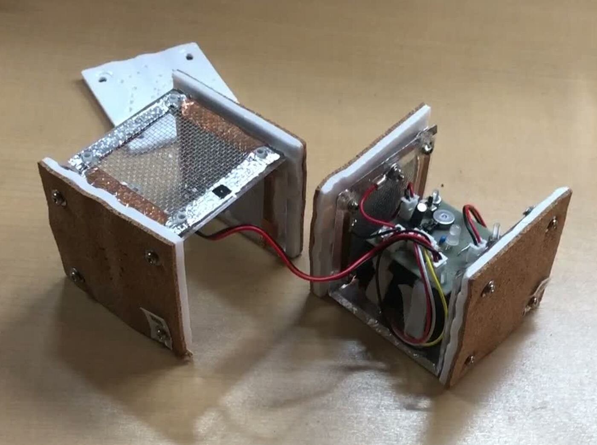
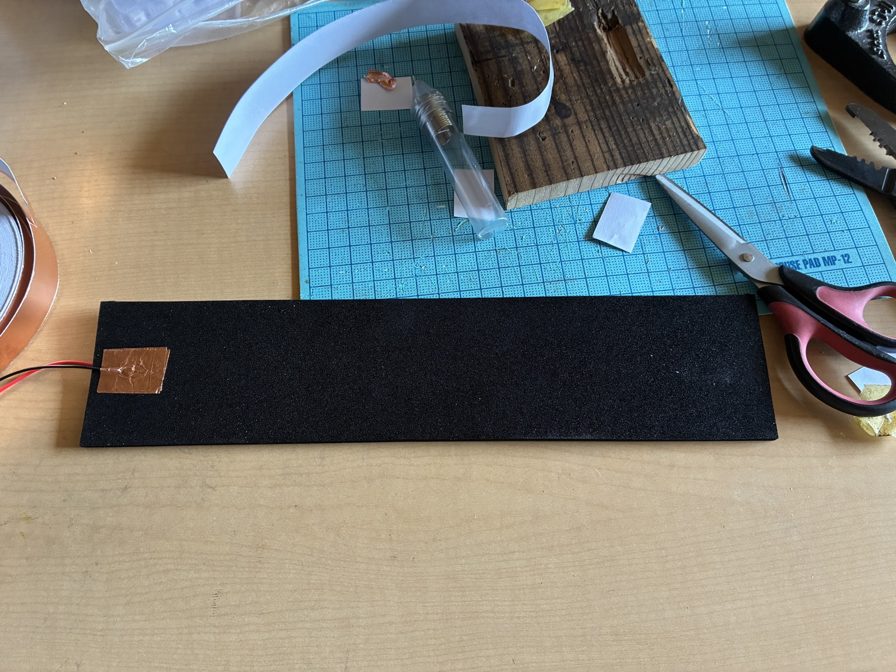
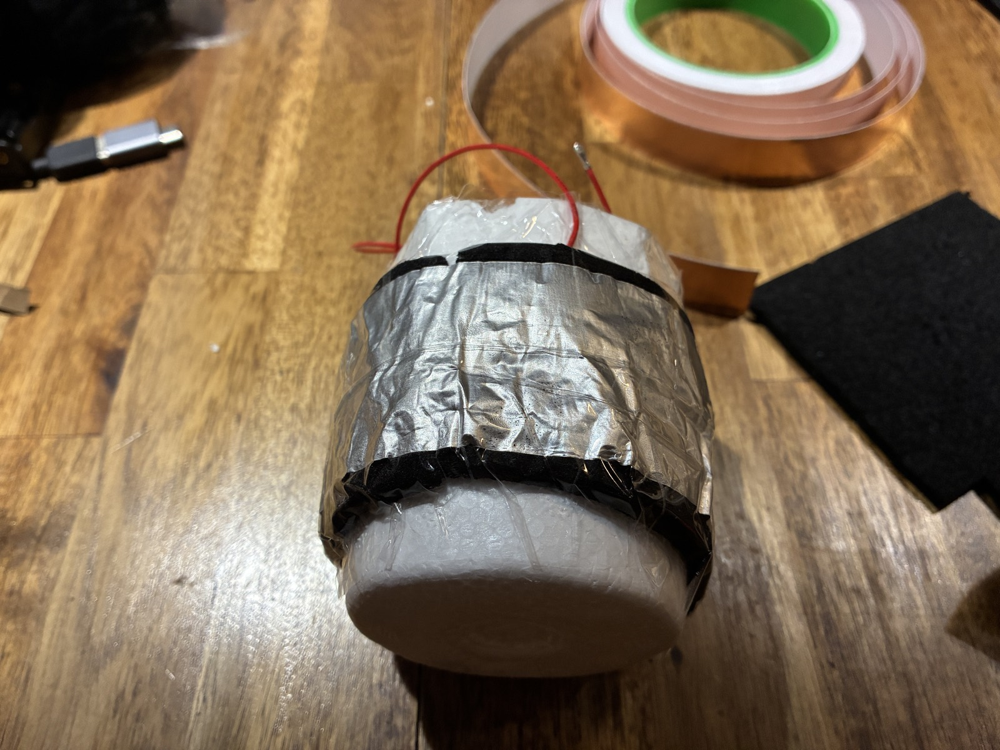
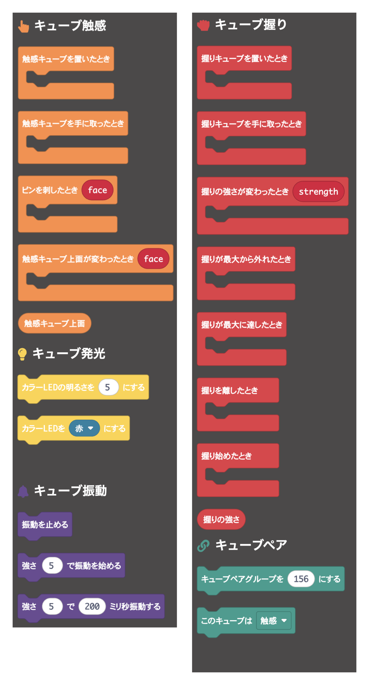

Texture and release. Two fidget boxes that work as a pair, each running a micro:bit v2, linked over radio.

Mood Cube is a fidget toy for settling your mood with your hands. The two boxes have opposite personalities, and touching one makes the other react.
Busubusu Cube, the one you poke, is a 7cm clear plastic box. Five of its faces carry a different material each, and you poke them with a fork to feel what's underneath. Calm, receptive play.
Niginigi Cylinder, the one you squeeze, is a 7cm fabric-covered tube with a pressure sensor inside, soft like a beanbag. Light and vibration follow how hard you squeeze. Active play, for letting force out.
You can see them working in this video.
The behaviour of each box is programmed by an elementary school kid using MakeCode blocks.
Busubusu Cube detects the instant a fork touches a face. It does that by making your body part of the circuit.

Metal bolts hold the texture materials to the outside of Busubusu Cube, and those bolts are wired to ground. They sit where your fingers naturally land. Poke a face with the fork and you complete a path from the bolt, through your body, through the fork, into the conductive mesh. P0 drops, and the software watches for that drop.

Only five faces carry mesh. The one with the A and B buttons is left clear so the buttons still work. Those five are wired together into one signal, so electrically there's no way to tell them apart. Instead, at the moment of contact the built-in accelerometer decides which face is pointing up, and that face travels along with the "poked" event. Making "poke the face on top" the rule of the game is what lets one wire do the work of five. The accelerometer tells all six faces apart, so it also knows when the bare button face is on top.
We don't use the capacitive touch built into micro:bit v2. It assumes a small electrode, and measurements showed it doesn't respond to five large meshes wired in parallel.
Niginigi Cylinder reads grip strength on a scale of 0 to 9. The sensing element is LCX-300, the black conductive foam used to protect ICs, sandwiched between metal foil electrodes. Press it and the foam compresses, conducts better, and its resistance falls.


The midpoint of that divider does not go straight into the analog input. When the source resistance is high, the analog-to-digital converter inside micro:bit cannot gather enough charge to sample it, and the reading wanders. So an op-amp that runs at 3V (NJU7043D) sits between the midpoint and P0, passing the voltage through at the same level but with the strength to drive the input. A voltage follower, the plainest use there is.
The hard part was reading zero when nobody is squeezing. Conductive foam is not a well-behaved part. Sew it into fabric and the wrapping alone keeps it slightly compressed. Worse, that compression keeps creeping: leave the cube alone for half a day and the unsqueezed reading has visibly moved. On top of that, simply holding the cube without squeezing puts pressure on it from your fingers. One fixed threshold gives you a phantom strength of 1 or 2 that never goes away.
So we layered three mechanisms. While the cube sits on the table, every reading is by definition unsqueezed, so it quietly recalibrates its zero, and left alone it fixes itself. The accelerometer then decides when the cube is picked up and put down, and strength is only judged in between; on the table, strength is always 0. Finally, once picked up, the lowest reading seen so far becomes the zero for that particular grip, because the pre-load differs by person and by how they hold it.
Busubusu Cube and Niginigi Cylinder are independent machines, each with its own micro:bit. They talk over the 2.4GHz radio built into micro:bit, so that what happens to one can drive the other.
To save battery, a cube falls into deep sleep after three minutes of nothing happening. While asleep the radio is off; once a second it wakes for a fraction of a moment, checks motion, the sensor and the radio, and goes back to sleep.
You never know when the other cube will be listening, so sending an event once won't do. Whichever cube something happened to repeats the same message every 50ms for 1.2 seconds. Since that's longer than the one-second listening cycle, it always overlaps at least once, with no clock synchronisation. The receiving side collapses the repeats so the event fires only once.
Current values, like which face of the partner is up or how hard it is being squeezed right now, aren't broadcast. They're requested at the moment the program asks for them, with an 80ms wait for the answer and a default if none arrives. Radio only runs when it's actually needed, which keeps the batteries alive.
Several pairs in the same room would interfere, so each pair can be given a group number from 0 to 255.
All of the above lives in a MakeCode extension called mood-cube-blocks. From the kid's program, no sensor threshold, no radio and no power management is visible. Only these five kinds of blocks are.

The nice part is that each box can use the other one's blocks as if they were its own. Write "on pin stuck" in the program for Niginigi Cylinder and it runs when its partner Busubusu Cube gets poked. The word "radio" never appears.
Busubusu Cube holds a few "apps", cycled with the A button (SELECT). For example: each poke lights one more LED on the 5×5 grid until the 25th clears the screen with a run of vibrations; a guessing game where the display names a face and poking the right one gives green and a scale; and a shooter with faces mapped to left, right and fire. The program for Niginigi Cylinder is tiny. Grip strength goes straight to vibration strength, and shaking it plays a sound.
The two boxes differ only in what hangs off P0. LED, vibration motor and power are identical, so the same parts appear in both lists.
The schematic and breadboard layout are on the system overview page. Don't pick a conductive texture material: holding the cube bare-handed would then produce exactly the same signal as poking it.